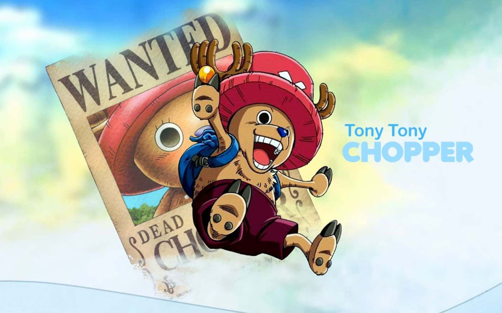
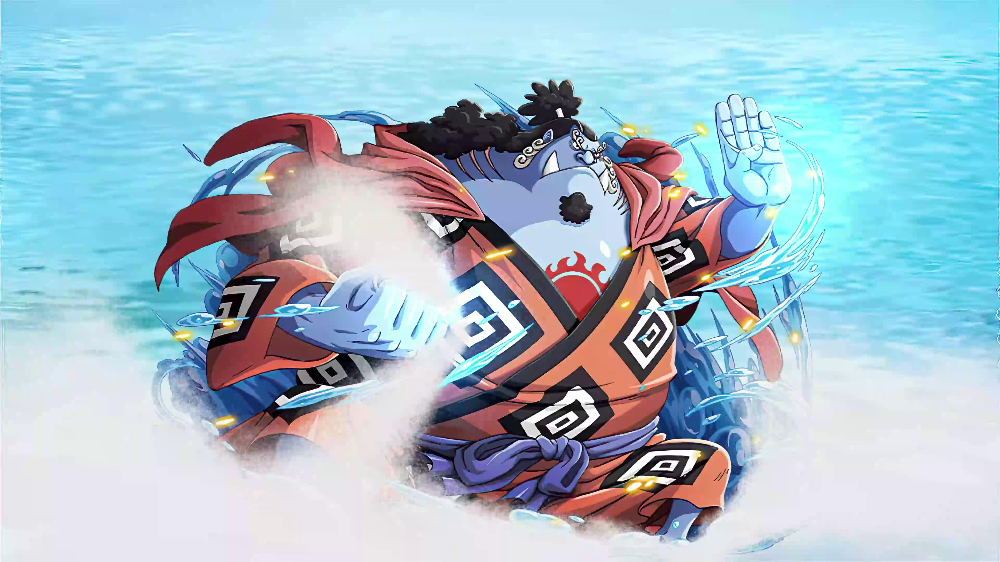

Es el capitán de la tripulación pirata conocida como los Piratas de Sombrero de Paja, fundada por él mismo para cumplir su sueño de encontrar el One Piece. Es originario del mar East Blue. Forma parte de los llamados "La Peor Generación" piratas cuya infamia es bien conocida por el mundo. Tras los eventos en el País de Wano, se le consideró uno de "Los Cuatro Emperadores", los cuatro piratas más peligrosos a ojos del mundo.
Roronoa Zoro es el primer miembro en unirse a los Mugiwaras claro que despues de Luffy su capitan. Antes de unirse a el este era un caza recompensas mas conocido como el cazador de Piratas que cobraba las cabezas de los piratas para sobrevivir. Actualmente es el Vice-Capitan de los Mugiwara el cual usa el estilo de lucha de las tres espadas(Santoryu). Su sueño es ser el mejor espadachín del mundo superando a Dracule Mihawk(el espadachin mas fuerte actualmente)y juro a su capitán Luffy que jamas volvería a perder
Nami se puede describir como una persona avara, manipuladora, desinhibida, temperamental y temerosa ante ciertos peligros. No obstante, ello no impide que Nami tenga momentos en donde demuestre valentía, amabilidad y respeto por las personas que estima. Ella era anteriormente un miembro de los Piratas de Arlong e inicialmente se unió a los de Sombrero de Paja con el fin de robarles, pero se unió oficialmente tras rebelarse contra Arlong y su posterior derrota a manos de Luffy.

Usopp es el francotirador de los Piratas de Sombrero de Paja y uno de los oficiales principales de la Gran Flota de Sombrero de Paja. Es el cuarto miembro de la tripulación y el tercero en unirse oficialmente. Tiene gran afición por las mentiras, soliendo inventarse que ha hecho grandes proezas en la vida, o que tiene alguna extraña enfermedad para librarse de alguna situación peligrosa, debido a que también es bastante miedoso.
Sanji, conocido como Pierna Negra, nacido como Vinsmoke Sanji, es el cocinero de los Piratas de Sombrero de Paja, así como uno de los oficiales principales de la Gran Flota de Sombrero de Paja. Es el quinto miembro de la tripulación, y el cuarto en unirse. Él nació en el North Blue, siendo el primer tripulante en no ser originario del East Blue. Es un mujeriego empedernido y constantemente flirtea con cualquier mujer bella que vea, debido a esto, Zoro le ha puesto el título de "Cocinero Pervertido". Incluso tiene la tendencia de cortejar a una mujer sin importar que esté casada, que lo haya rechazado abiertamente o que sea hostil hacia él.

Tony Tony Chopper es el médico de los Piratas de Sombrero de Paja, es un reno que comió la fruta Hito Hito de la isla de Drum. Él es el sexto miembro de la tripulación y el quinto en unirse a ella, este renito nació con una particularidad el tiene la nariz azul. Actualmente es el médico de los Mugiwara, el tiene el sueño de poder curar cualquier enfermedad del mundo y para cumplir ese sueño tomó la decisión de salir al mar con sus amigos.

Nico Robin, también conocida por sus epítetos como "Niña Demonio" y La Luz de la Revolución es la arqueóloga de los Piratas de Sombrero de Paja, Es el séptimo miembro de la tripulación y el sexto en unirse, haciéndolo al final del arco de Arabasta. Su sueño es conocer la verdadera historia investigando en los poneglyphs.
Franky, apodado el Hombre de Hierro, es el carpintero naval de los Piratas de Sombrero de Paja. Es el octavo miembro de la tripulación y el séptimo en unirse, haciéndolo al final del arco del regreso a Water 7. Nacido como Cutty Flam y originario del South Blue, Franky fue un miembro de los Tom's Workers, hasta que un incidente que dañó su cuerpo le requirió convertirse en un cyborg para curarse. Posteriormente se convertiría en el líder de la familia Franky, un grupo de cazarrecompensas y desmanteladores de barcos, adoptando su nombre actual para ocultar su identidad.
Brook, conocido como Soul King, es el músico de los Piratas de Sombrero de Paja, uno de sus dos espadachines. Es el noveno miembro de la tripulación y el octavo en unirse, haciéndolo al final del arco de Thriller Bark. Brook consumió la fruta Yomi Yomi, que le permitió volver a la vida después de la muerte una vez. Brook aprendió con el tiempo a aprovechar más profundamente los poderes de su fruta del Diablo, dándole un control significativo sobre su propia alma y las almas de los demás.

Jinbe el Caballero del Mar es el timonel de los Piratas de Sombrero de Paja, siendo el décimo miembro de la banda y el noveno en unirse. Es un gyojin tiburón ballena, que sirvió como antiguo capitán de los Piratas del Sol y como miembro de los Siete Señores de la Guerra del Mar. Su nombre fue mencionado por primera vez por Yosaku cuando explicó el sistema de los Siete Señores de la Guerra del Mar. Sin embargo, fue introducido mucho más tarde en el arco de Impel Down. Renunció a su título como uno de los Siete Señores de la Guerra del Mar en la Batalla de Marineford, aliándose a los Piratas de Barbablanca.